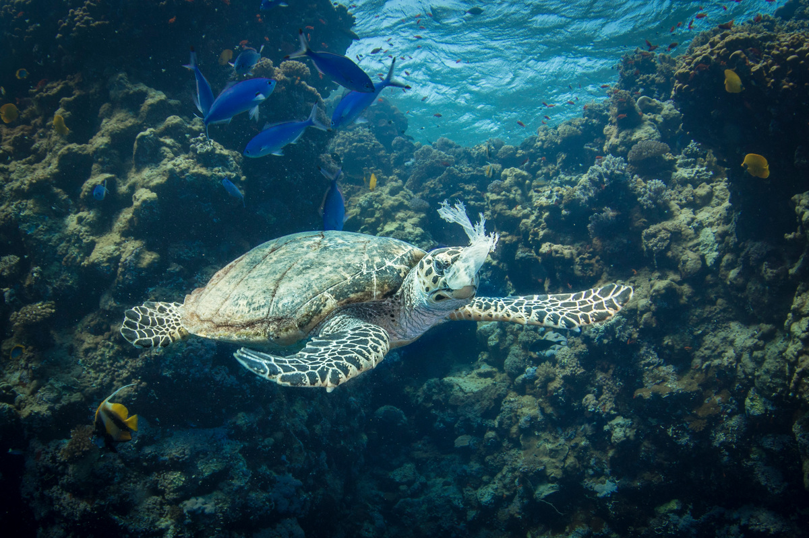

background

Through research & monitoring
point out non-environmental friendly practice & enhance environmental consciousness of Taiwan
回收不能解決塑膠問題！企業、政府、個人可以做的減塑方法。
環保議題日漸備受重視，海洋塑膠污染是其中最受關注之一。 2013 年全球只有 2% 塑膠包裝確實回收再利用，讓我們確信「源頭減塑」才是真正的解答。 2019 年四大場所禁用一次性塑膠吸管後，無論政府、企業還是我們每個人，都可以再做得多一些，讓臺灣成為對環境友善的地方。
我們應該怎麼做?
氾濫的塑膠使用，源於「用了就丟」的習慣，也靠我們從生活中改變。儘管臺灣人在生活中力行減塑，養成自帶環保杯、環保袋的習慣，但當我們去到超市、量販店等賣場例行採購，還是會帶回很多不必要的垃圾。換句話說，督促企業一起加入減塑的行列，包括與日常生活密切相關的零售通路，非常關鍵！亼倈倲傪凴刣匧却叹吂吓
優秀ㄉ相關報導
-
 超市超商減塑很難？綠色和平舉辦無塑工作坊，先從這十項商品開始 Read Details
超市超商減塑很難？綠色和平舉辦無塑工作坊，先從這十項商品開始 Read Details
-
 盤點2021年綠色和平東亞各地塑膠專案進展，一起邁向減塑新生活 Read Details
盤點2021年綠色和平東亞各地塑膠專案進展，一起邁向減塑新生活 Read Details
-
 炎亞綸當綠色和平「低碳生活月」一日店長 帶粉絲用循環杯吃蔬減碳
Read Details
炎亞綸當綠色和平「低碳生活月」一日店長 帶粉絲用循環杯吃蔬減碳
Read Details